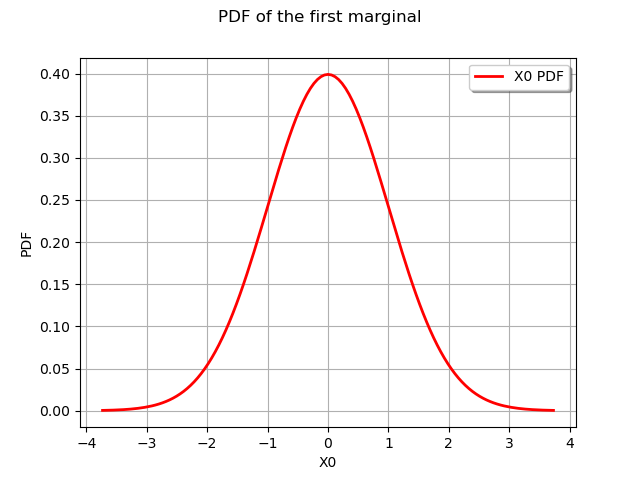
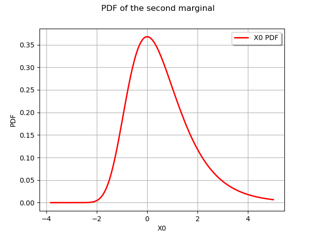

Note
Go to the end to download the full example code
Create and draw multivariate distributions¶
In this example we create and draw multidimensional distributions.
import openturns as ot
import openturns.viewer as otv
from matplotlib import pylab as plt
ot.Log.Show(ot.Log.NONE)
Create a multivariate model with ComposedDistribution¶
In this paragraph we use ![~openturns.ComposedDistribution]() class to
build multidimensional distribution described by its marginal distributions and optionally its dependence structure (a particular copula).
class to
build multidimensional distribution described by its marginal distributions and optionally its dependence structure (a particular copula).
We first create the marginals of the distribution :
a Normal distribution ;
a Gumbel distribution.
marginals = [ot.Normal(), ot.Gumbel()]
We draw their PDF. We recall that the drawPDF command just generates the graph data. It is the viewer module that enables the actual display.
graphNormalPDF = marginals[0].drawPDF()
graphNormalPDF.setTitle("PDF of the first marginal")
graphGumbelPDF = marginals[1].drawPDF()
graphGumbelPDF.setTitle("PDF of the second marginal")
view = otv.View(graphNormalPDF)
view = otv.View(graphGumbelPDF)
- 
- 
The CDF is also available with the drawCDF method.
We then have the minimum required to create a bivariate distribution, assuming no dependency structure :
distribution = ot.ComposedDistribution(marginals)
We can draw the PDF (here in dimension 2) :
graph = distribution.drawPDF()
view = otv.View(graph)
We also draw the CDF :
graph = distribution.drawCDF()
view = otv.View(graph)
If a dependence between marginals is needed we have to create the copula specifying the dependency structure, here a NormalCopula :
R = ot.CorrelationMatrix(2)
R[0, 1] = 0.3
copula = ot.NormalCopula(R)
print(copula)
NormalCopula(R = [[ 1 0.3 ]
[ 0.3 1 ]])
We create the bivariate distribution with the desired copula and draw it.
distribution = ot.ComposedDistribution(marginals, copula)
graph = distribution.drawPDF()
view = otv.View(graph)
Multivariate models¶
Some models in the library are natively multivariate. We present examples of three of them :
the Normal distribution ;
the Student distribution ;
the UserDefined distribution.
The Normal distribution¶
The Normal distribution is natively multivariate.
Here we define a bivariate standard unit gaussian distribution and display
its PDF.
dim = 2
distribution = ot.Normal(dim)
graph = distribution.drawPDF()
graph.setTitle("Bivariate standard unit gaussian PDF")
view = otv.View(graph)
The Student distribution¶
The Student distribution is natively multivariate. Here we define a Student distribution in dimension 2 and display its PDF :
dim = 2
R = ot.CorrelationMatrix(dim)
R[1, 0] = -0.2
distribution = ot.Student(4, [0.0, 1.0], [1.0, 1.0], R)
graph = distribution.drawPDF()
graph.setTitle("Bivariate Student PDF")
view = otv.View(graph)
The UserDefined distribution¶
We can also define our own distribution with the UserDefined distribution.
For instance consider the square ![[-1,1] \times [-1, 1]]() with some
random points uniformly drawn. For each point the weight chosen is the square
of the distance to the origin. The
with some
random points uniformly drawn. For each point the weight chosen is the square
of the distance to the origin. The UserDefined class normalizes the weights.
We first generate random points in the square.
distUniform2 = ot.ComposedDistribution([ot.Uniform(-1.0, 1.0)] * 2)
N = 100
sample = distUniform2.getSample(N)
We then build the points and weights for the UserDefined distribution.
points = []
weights = []
for i in range(N):
points.append(sample[i, :])
weights.append((sample[i, 0] ** 2 + sample[i, 1] ** 2) ** 2)
We build the distribution :
distribution = ot.UserDefined(points, weights)
graph = distribution.drawPDF()
graph.setTitle("User defined PDF")
We can draw a sample from this distribution with the getSample method :
omega = distribution.getSample(100)
cloud = ot.Cloud(omega, "black", "fdiamond", "Sample from UserDefined distribution")
graph.add(cloud)
view = otv.View(graph)
As expected most values are near the edge of the square where the PDF is the higher.
Display all figures
plt.show()